Ya sabes que en Scratch los objetos o sprits no se refieren solo a cosas u objetos, sino también a cualquier tipo de personajes: personas, animales, plantas, personajesfantásticos...
En la página anterior has inventado la historia o guion de tu videojuego. Ahora vas a aprender a insertar, transformar y disfrazar tus personajes y objetos. En Scratch hay muchas formas de hacerlo para conseguir que sean como tú los has pensado.
¡Pon atención!
1. Tus personajes y objetos cambian de apariencia
No hay juego sin personajes. En tu guion has pensado cuáles serían esos personajes y objetos. El siguiente paso es aprender cómo y cuándo insertarlos en tu videojuego.
Has comprobado que en los videojuegos los personajes y objetos cambian a menudo de apariencia. En Scratch se llaman disfraces. Aprenderemos también cómo y cuando hacerlo.
En las siguientes pestañas te lo explico todo. ¡No te lo pierdas!
Cómo
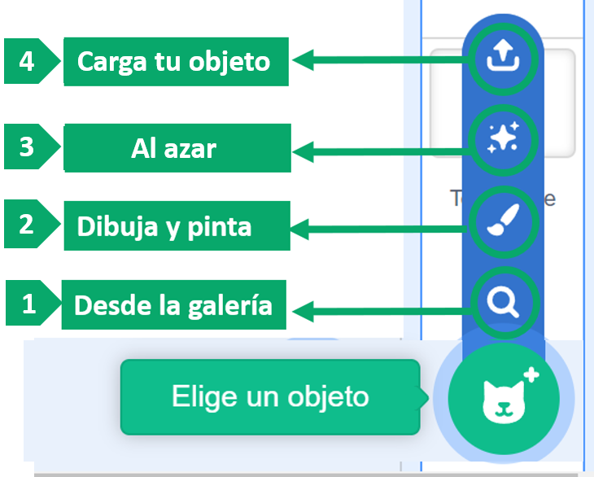
Con los botones que aparecen en la imagen de la izquierda tienes diferentes opciones para elegir un objeto en Scratch:
En la galería de Scratch hay una gran variedad de objetos clasificados en temáticas. En la sección de fantasía hay algunos interesantes relacionados con los videojuegos: dragones, brujas...
La opción pinta te llevará al editor gráfico de Scratch. En él encontrarás muchas herramientas para dibujar, colorear, transformar... Así podrás crear tus propios personajes y objetos. Desarrollaremos esta opción un poca más adelante.
Con la tercera opción puedes elegir un objeto sorpresa, totalmente al azar.
Otra opción es cargar desde tu dispositivo una imagen guardada en el mismo.
Ya sabes que cada objeto cuenta con sus propios disfraces.
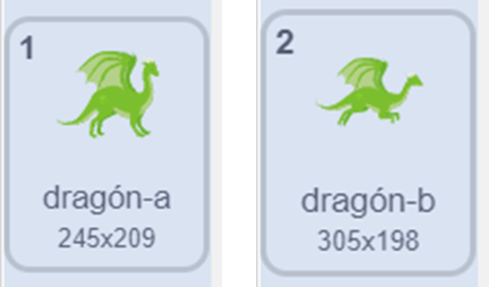
Para insertar otros disfraces para ese mismo objeto, en la pestaña disfraces, tienes las mismas opciones que con los objetos:
Desde la galería, donde se muestran los disfraces de cada objeto.
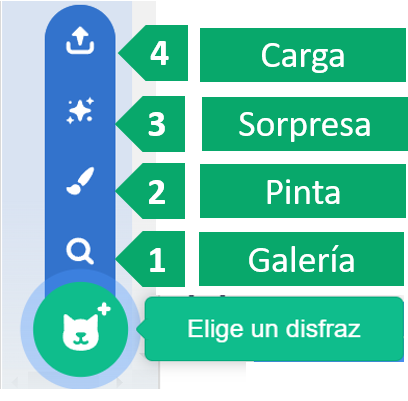
Con la opción pinta puedes dibujar y pintar tus propios disfraces.
Elegir un disfraz sorpresa, al azar.
Cargar desde tu dispositivo.
Recuerda que los disfraces no son otra cosa que cambios de apariencia: color, forma, tamaño, posición...
Los disfraces nos pueden servir en un videojuego para darle más realismo y emoción.
Cuándo
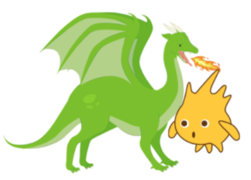
Cuando has explorado los videojuegos en Scratch te habrás dado cuenta de que los personajes y demás objetos cambian de apariencia en determinados momentos:
De forma continua ,para dar sensación de movimiento.
En las colisiones.
Cuando se encuentra con un enemigo.
Al conseguir una recompensa.
En desplazamientos y saltos.
Si pasas de nivel.
Al final de la partida.
Revisa tu guion y piensa en qué momentos sería ideal esos cambios de disfraz.
Según los momentos que hayas elegido, podrás programarlo más adelante con diferentes bloques y estructuras, pronto aprenderemos a hacerlo.
Lectura facilitada
Scratch tiene disfraces
para cambiar la apariencia
de los personajes y objetos.
La apariencia es el cambio de:
-Color.
-Forma.
-Tamaño.
-Posición.
-Y muchas más.
Tú aprendes cómo y cuándo
poner disfraces.
Puedes leer estas pestañas.
Cómo
Elegir un objeto
Hay cuatro botones
para elegir un objeto en Scratch.
Los botones dan estas cuatro opciones:
1.Galería .
En la galería hay muchos objetos.
Los objetos se organizan por temas.
En el tema fantasía hay objetos de videojuegos.
2. Pinta:
Puedes crear tus propios objetos y personajes.
Puedes dibujar, colorear o cambiar objetos.
3. Al azar.
Eliges un objeto sorpresa.
4. Carga tu objeto:
Cargas una imagen desde tu dispositivo.
Cambiar disfraces
En esta imagen
hay dos dragones diferentes.
Cada objeto tiene sus disfraces.
Puedes poner otros disfraces en un objeto.
Para poner otros disfraces en un objeto
tienes estas opciones:
1.Galería .
En la galería hay muchos disfraces
de cada objeto.
2. Pinta:
Puedes crear tus propios disfraces.
3. Al azar.
Eliges un disfraz sorpresa.
4. Carga tu objeto:
Cargas un disfraz desde tu dispositivo.
Los disfraces dan realismo y emoción
al videojuego.
Cuándo
Los cambios de apariencia
se hacen en algunos momentos.
Estos son los momentos:
- Siempre.
- En las colisiones.
- Cuando se encuentra con un enemigo.
- Al conseguir una recompensa.
- En desplazamientos y saltos.
- Cuando pasas de nivel.
- Al final de la partida.
Sigue estos pasos:
Revisa tu guion.
Piensa en qué momentos
cambiar de disfraz.
Después aprenderás
a programar.
Audio
2. Elige tus personajes
Después de haber elaborado el guion de tu videojuego empieza algo muy interesante, iniciar un proyecto con Scratch para elegir los personajes y objetos que vamos a necesitar.
Inicia sesión en Scratch para que se guarden siempre los cambios.
Ten siempre presente tu guion. Según la temática y objetivo del videojuego elige los personajes.
Puedes utilizar todas las opciones que tiene el programa Scratch.
OPCIÓN A: ¿QUÉ OPCIÓN?
Elige en la lista desplegable las palabras que faltan.
OPCIÓN B: Abre la galería
Elige de la galería de Scratch los personajes y objetos que habías anotado en tu guion haciendo clic en el icono de la lupa. Si ves otros que te gusten más o pueden mejorar tu proyecto, no dudes en insertarlos.
Una vez los hayas insertado, haz clic en la pestaña disfraces. Verás todos los disfraces de ese personaje u objeto. Si te parecen insuficientes, busca otros desde la misma galería.
OPCIÓN C: Personaliza tu diseño
Si en la galería no encuentras los personajes y objetos que necesitas, puedes utilizar imágenes de internet y guardadas en tu ordenador, insértalos ahora en tu proyecto. Para ello haz clic en la opción Carga.
Estos archivos puedes conseguirlos de varias formas:
Buscando en internet imágenes que te interesen y guardándolas en tu dispositivo.
Haciendo tus propias fotografías y guardándolas en tu dispositivo.
OPCIÓN D: Si te gusta dibujar...
Si te gusta dibujar en papel tus propios diseños, no dudes en hacerlo con tus útiles de dibujar: lápices, rotuladores, pinturas.... Luego pide ayuda a un adulto para hacer una fotografía y guardarlos en tu ordenador.
Una vez que lo subas al programa Scratch necesitarás quitar el fondo de los personajes con el editor gráfico de Scratch. Si no sabes hacerlo, consulta el apartado siguiente "Edita sin límites".
3. Edita sin límites
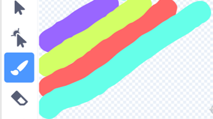
Para que consigas que tus personajes, objetos y disfraces parezcan más reales y se parezcan lo máximo posible a los que has pensado en tu guion, te aconsejo que pruebes a crearlos o transformarlos con el editor gráfico de Scratch, en la opción pintar. Se trata de todas las herramientas que tiene el programa Scratch para modificar y crear imágenes.
En las siguientes pestañas aprenderás a crear tus propios personajes utilizando las herramientas de este editor. Te sorprenderá todo lo que puedes hacer.
Mapa de bits o vectores
Observa estas dos imágenes:
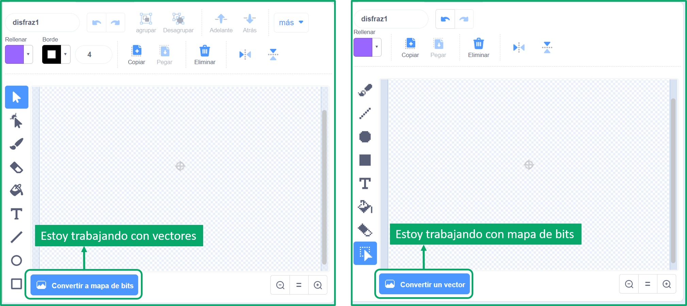
Cuando haces clic en el botón pintar para crear un objeto aparecen las herramientas de dibujo tal como ves en la imagen de la izquierda. Fíjate en el botón azul situado en la zona inferior, "Convertir a mapa de bits". Te indica que si lo pulsas pasarás a trabajar con mapa de bits, si no lo haces estarás trabajando con vectores.
Las imágenes digitales se clasifican en dos grupos: los vectoriales y los mapas de bits. Veamos las diferencias:
En los mapas de bits la imagen se divide en pequeños puntos de color llamados píxeles. Si los agrupamos es cuando creamos el mapa de bits y así es como va apareciendo la imagen. Cuantos más píxeles más resolución tendrá. Por eso cuando ampliamos este tipo de imágenes se ve pixelado, ya que el programa tiene que inventarse información.
La imagen vectorial se genera con datos matemáticos que aportan información sobre su altura, ángulo, inclinación y color. Gracias a esto se puede variar el tamaño sin que se modifique la calidad. Esto hace que en Scratch sea la opción más empleada.
En las pestañas siguientes veremos en profundidad las herramientas de cada una de ellas.
Vectores
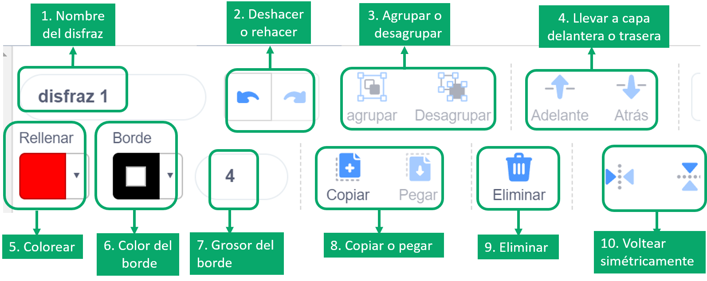
Al seleccionar la opción pintar dispones de estas herramientas de edición en la zona superior:
1. Al pintar un objeto, por defecto, aparece el nombre "disfraz 1". Es conveniente que lo cambies por otro más acorde a tu objeto.
2. Con la flecha hacia la izquierda se deshace lo último que has hecho y con la flecha a la derecha se rehace lo último que has eliminado.
3. Sirve para agrupar varios elementos en una sola imagen o desagruparlos.
4. Es muy útil para situar un elemento delante o detrás de otros y de esta manera ubicarlos en un primer o segundo plano.
5. Al hacer clic en ella se abre una ventana para seleccionar el color con el que queremos colorear una zona.
6. Se selecciona el color del borde para elegirlo o modificarlo.
7. Se aumenta o se disminuye el grosor del borde.
8. Herramienta para copiar y pegar lo que selecciones.
9. Herramienta para eliminar todos los elementos que selecciones.
10. Sirve para voltear de derecha a izquierda o al revés y también de arriba hacia abajo o al revés. Así podemos crear figuras en espejo, simétricamente.
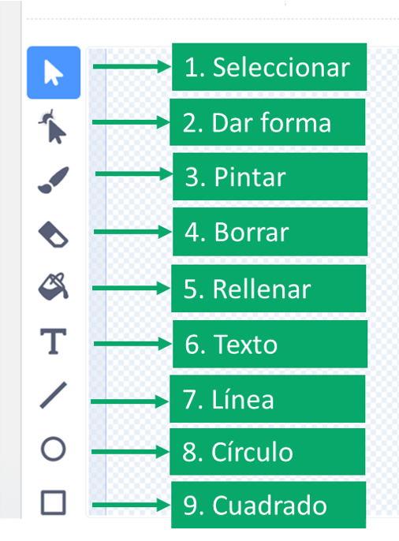
En la zona lateral del editor tenemos las siguientes herramientas:
1. Selecciona el elemento sobre el que quieres actuar.
2. Al hacer clic sobre cualquier elemento aparecen puntos que puedes arrastrar para cambiar su forma.
3. Pintar trazos, formas...como si lo hicieras con un pincel. Puedes elegir el grosor.
4. Herramienta goma para borrar. Puedes elegir el tamaño según se trate de una superficie más o menos grande.
5. Rellenar una zona delimitada con el color que quieras. Se selecciona en la barra superior (Herramienta 5).
6. Insertar texto en nuestro dibujo.
7. Trazar líneas. El color y grosor también se selecciona en la barra de herramientas superior.
8 y 9. Insertar formas circulares o cuadrangulares, que podemos modificar de tamaño, color, contorno...
Transforma
Trabajando con vectores puedes hacer múltiples transformaciones.
Cada objeto que subas de la galería o que hayas creado con las herramientas de dibujo, puedes transformarlo de muchas maneras para modificarlo a tu gusto. De esta manera crearás diferentes disfraces de un mismo objeto.
Observa las siguientes imágenes:
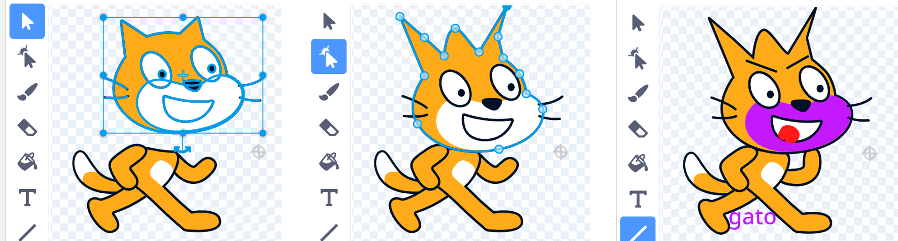
En la imagen de la izquierda, con la herramienta de selección, hemos separado la cabeza de Scratch. Podemos hacer lo mismo con todas las partes delimitadas de cualquier objeto. Una vez hecho esto se pueden hacer algunos cambios: aumentar o disminuir de tamaño, girar, cambiar la posición...
En la imagen de la derecha, el gato Scratch le hemos hecho otros cambios: le hemos puesto cejas con la herramienta línea, le hemos dibujado una lengua con la herramienta pincel, se ha modificado la posición de un brazo al girar esta parte y hemos añadido texto.
En la imagen central, con la herramienta de volver a dar forma, aparecen puntos en el contorno de la parte seleccionada que puedes arrastrar para cambiar la forma de tu objeto. Para ello tienes dos herramientas: curvado para transformar en líneas curvas y a la derecha para transformar en líneas poligonales. Observa la imagen:
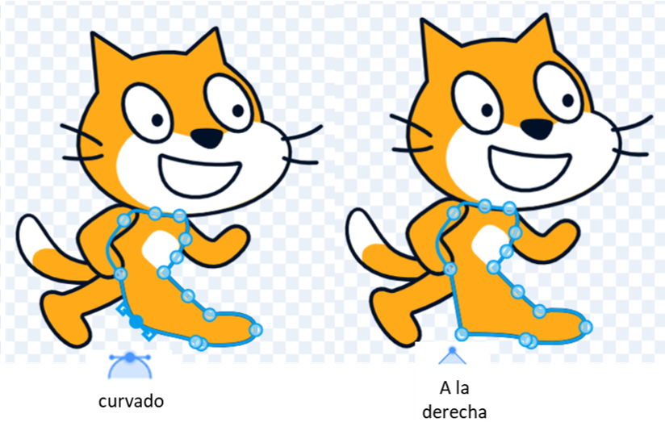
Mapa de bits
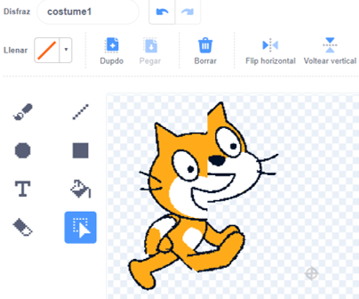
Como puedes observar en la imagen de la izquierda, las herramientas con mapa de bits son parecidas a las herramientas con vectores, aunque más simples.Faltarían algunas como agrupar, desagrupar, enviar delante o detrás y dar forma.
La herramienta de selección en este caso tiene una función muy especial que no tenemos al trabajar con vectores, puedes verlo en el ejemplo del gato. Hemos seleccionado diferentes partes del objeto y las hemos arrastrado a otras zonas. De esta manera puedo crear criaturas fantásticas, muy útiles en los videojuegos.
Vídeo
En este vídeo se explica cómo utilizar las herramientas más importantes en el editor gráfico de Scratch:
Lectura facilitada
Puedes hacer personajes, objetos y disfraces más reales
con el editor gráfico de Scratch.
El editor gráfico de Scratch está en la opción de pintar.
Estas son las opciones del editor gráfico de Scratch:
Mapa de bits o vectores
En el botón pintar puedes trabajar de dos formas.
Puedes trabajar con mapa de bits o con vectores.
Para cambiar la forma de trabajar
pulsa el botón azul de la parte de abajo.
Las diferencias entre estas formas de trabajar son:
En los mapas de bits:
-Se hace con píxeles.
Los píxeles son pequeños puntos de color
que forman la imagen.
-Si se amplía la imagen no se ve bien.
-El programa tiene que inventar información.
En la imagen vectorial:
-Se hace con datos matemáticos.
-Estos datos dan mucha información sobre:
-Altura.
-Ángulo.
-Inclinación.
-Color.
-La imagen tiene mucha calidad.
-En Scratch se usa más esta opción.
Las herramientas se explican en las siguientes pestañas.
Vectores
En la parte de arriba están las herramientas.
Con las herramientas puedes:
-Cambiar el nombre del disfraz.
-Deshacer lo último que has hecho
con la flecha de la izquierda.
-Rehacer lo último que has eliminado
con la flecha de la derecha.
-Agrupar o desagrupar elementos.
-Poner elementos delante o detrás
de otros.
-Colorear una zona.
-Colorear el borde.
-Aumentar o disminuir el ancho
del borde.
-Copiar y pegar elementos.
-Eliminar elementos seleccionados.
-Girar a la derecha o a la izquierda la imagen.
-Mover la imagen de arriba hacia abajo.
En la parte lateral hay más herramientas.
Con las herramientas puedes:
-Seleccionar el elemento.
-Cambiar la forma del elemento.
Para cambiar la forma
puedes hacer clic y arrastrar.
- Pintar con un pincel.
Puedes elegir el grosor.
-Borrar con una goma.
Puedes elegir el tamaño de la goma.
-Rellenar con color un objeto.
-Poner texto en el dibujo.
-Hacer líneas.
Puedes elegir el color y grosor.
-Insertar formas.
Las formas se pueden cambiar.
Hay muchas formas.
Pueden ser círculos, cuadrados y muchas más.
Transforma
Puedes hacer transformaciones.
Puedes hacer muchos disfraces
de un mismo objeto.
Estas transformaciones pueden ser:
-Separar partes del objeto.
-Cambiar esas partes separadas.
Para cambiar la forma del objeto
pulsa en volver a dar forma y arrastra.
Puedes hacer curvas o líneas rectas así:
En la última imagen del gato
tienes un ejemplo de una transformación.
Los cambios y las herramientas son:
-Cejas con línea.
-Lengua con pincel.
-Brazo con giro.
-Texto.
Mapa de bits
En mapa de bits hay menos opciones.
Faltan las opciones de:
-Agrupar.
-Desagrupar.
-Enviar delante o detrás
-Dar forma.
La herramienta de selección es muy buena.
Esta herramienta mueve partes del objeto.
Puedes crear criaturas fantásticas
con la herramienta de selección.
Vídeo
El vídeo explica el uso de las herramientas.
Lumen dice ¿Te ayudo con los vectores y mapa de bits?
Si te ha resultado un poco difícil entender las diferencias entre trabajar con vectores o con mapas de bits, consulta este vídeo:
Kardia dice ¿Te gustaría transformar imágenes?
¿Quieres saber cómo quitar el fondo de un dibujo hecho por ti o de una imagen de internet que tengas guardada en tu dispositivo? Este video te lo muestra:
4. Haz clic en el pincel
Haz clic en el pincel, en la opción pintar, si quieres personalizar tus personajes, objetos, disfraces y fondos.
¿Has visto todas las posibilidades que tiene el editor gráfico de Scratch? Sorprendente, ¿verdad?
Te propongo que te entrenes en esta opción que te da este programa para pintar, colorear, transformar...los elementos de tu proyecto.
Te muestro varias opciones para que elijas aquellas que sean adecuadas para ti, pero te aconsejo que las hagas todas, aprenderás mucho.
OPCIÓN A: ¿Mapa de bits o vectores?
Lee el texto que aparece abajo sobre las diferencias entre mapas de bits y vectores. Luego completa las palabras que faltan.
Si has tenido algunos fallos y no recuerdas la solución, no te preocupes, vuelve a leer el apartado 3, "Edita sin límites, concretamente la pestaña Mapa de bits o vectores.
OPCIÓN B: Transforma y disfraza
En esta actividad vas a transformar un objeto de la galería de Scratch con las herramientas con vectores. Para ello, sigue estos pasos:
Inserta un objeto desde la galería.
Haz clic en la pestaña disfraces.
Observa los distintos disfraces de ese objeto y realiza estos ejercicios:
Si te gustan e interesan todos, no borres ninguno.
Duplica uno de ellos y transfórmalo con el editor gráfico. Te sugiero que hagas estas modificaciones:
Separa sus partes.
Elimina alguna o borra con la goma algunos detalles.
Cambia el tamaño del objeto o de algunas de sus partes.
Cambia de color al menos alguna parte.
Hazle algún dibujo o complemento utilizando líneas.
Dibújale algo con el pincel.
Cambia el grosor de alguna línea o trazo.
Añade un texto.
Transforma el objeto o parte de él con la herramienta de volver a dar forma.
Asígnale un nombre.
Por último, observa el disfraz que has creado y trata de responder a estas preguntas:
¿Te gusta cómo ha quedado?
¿Crees que has utilizado bien las herramientas? ¿Ha fallado algo?
¿Cambiarías algo?
¿Te gustaría incluir este disfraz en tu proyecto?
Retroalimentación
Si no te gusta tu disfraz o piensas que no has utilizado bien las herramientas, no te preocupes. Te aconsejo que vuelvas a repasar el punto 3, fijándote bien en el uso de cada herramienta y en los ejemplos que te pone.
Luego vuelve a transformar tu disfraz.
OPCIÓN C: Objeto fantástico
Crea tu propio objeto fantástico utilizando las herramientas del editor gráfico de Scratch.
Te aconsejo que para que resulte verdaderamente fantástico, no pienses de antemano cómo será o se llamará.
Solo tienes que seguir las instrucciones que te doy experimentando con las herramientas con vectores:
Haz clic en Elegir objeto y luego en la opción pintar. Como ya sabes vas a trabajar con vectores.
Vas a crear un objeto haciendo una composición siguiendo estos pasos:
Inserta al menos tres formas geométricas.
Ponle colores diferentes a cada una.
Cambia el tamaño de al menos una de esas figuras.
Agrega al menos cuatro líneas y ponle distintos grosores a cada una de ellas.
Traza alguna línea con el pincel del color y grosor que quieras.
Añade un texto.
Fíjate ahora en todos los elementos que tienes. ¿Crees que podrías agruparlo para formar un objeto o personaje fantástico?
Prueba distintas posibilidades seleccionando y arrastrando todos los elementos hasta que encuentres una composición que te guste. Luego conviértelos en un solo objeto con la herramienta agrupar.
¡Aún no hemos terminado! Falta lo más divertido, transforma tu objeto con la herramienta volver a dar forma. Prueba a arrastrar los nodos que quieras utilizando las dos opciones: curvado o a la derecha. No pares de hacer transformaciones hasta que te guste el resultado.
¡Ya tienes tu objeto fantástico! Sólo te falta ponerle un nombre que te guste. Puedes incluirlo en tu proyecto.
OPCIÓN D: Diseño libre
¿Te gusta sentirte libre y que no te indiquen los pasos a seguir? Si es así, no dudes en hacer esta actividad.
Crea un objeto con las herramientas de vectores haciendo una composición libre y a tu gusto, aunque con una sola condición: utiliza, al menos una vez, todas las herramientas.
Por supuesto, eres también libre para ponerle el nombre que más te guste.
Por último, observa tu creación y trata de responder a estas preguntas:
¿Qué te parece tu creación? ¿Te gusta?
¿Crees que has utilizado bien las herramientas? ¿Ha fallado algo?
¿Cambiarías algo?
Retroalimentación
Si no te gusta tu creación o piensas que no has utilizado bien las herramientas, no debes frustrarte. Te aconsejo que vuelvas a repasar el punto 3, fijándote bien en el uso de cada herramienta y en los ejemplos que te pone.
Luego vuelve a transformar o a crear de nuevo,
OPCIÓN E: Esto está pixelado
En esta actividad vas a trabajar con mapas de bits. Para ello sigue los siguientes pasos:
Selecciona un objeto de Scratch y pulsa en la pestaña disfraces.
Haz clic en el botón azul Convertir a mapa de bits.
Aumenta el tamaño y observa lo que pasa. Está pixelado, ¿verdad?
Borra con la goma alguna parte.
Selecciona una parte del objeto y arrástrala a otras zona. Puedes hacerlo con más partes y hacer una composición a tu gusto.
Crea un complemento para este objeto. Puede tratarse de un sombrero, pañuelo, gorra... Par ello utiliza las demás herramientas del editor de mapa de bits: formas geométricas, líneas, trazos, color y texto.
Observa el resultado y vuelve a transformar o crear si no te ha gustado.
Por último, analiza los objetos y disfraces que has creado con vectores y con mapa de bits e intenta responder a las siguientes preguntas:
¿Qué tipo herramientas te ha resultado más fácil? ¿Con cuál te has sentido más cómodo o cómoda?
¿Con cuál has obtenido mejores resultados?
¿Para qué tipo de transformaciones o creaciones utilizarías una y otra?
¿Incluirías tu creación en tu proyecto?
Retroalimentación
Si no te gusta tu creación o piensas que no has utilizado bien las herramientas, no debes frustrarte. Te aconsejo que vuelvas a repasar el punto 3, fijándote bien en el uso de cada herramienta y en los ejemplos que te pone.
Luego vuelve a transformar o a crear de nuevo,
¿Estáis emocionados con la actividad?
Cuando estabais haciendo esta actividad grupal, ¿Cómo se estaban sintiendo?
Puede que algunos compañeros o compañeras se hayan sentidoinseguros o tensas para hacer la actividad. Seguro que alguien ha tranquilizado al equipo y ha ayudado a hacerla.
Es posible que alguien estuviese enfadado o enfadada, quizás porque no sabía cómo hacerla.
Cuando trabajamos en equipo podemos tener diferentes sensaciones al hacer una actividad. Conocerlas y comprenderlas nos ayudará a hacer la tarea con éxito. Para ello sigue estos consejos en las próximas actividades en equipo:
Piensa en cómo te estás sintiendo tú.
Observa y pregunta a tus compañeros para saber cómo se sienten.
Decidid en equipo qué cosas podéis hacer para sentiros mejor para resolver la actividad.